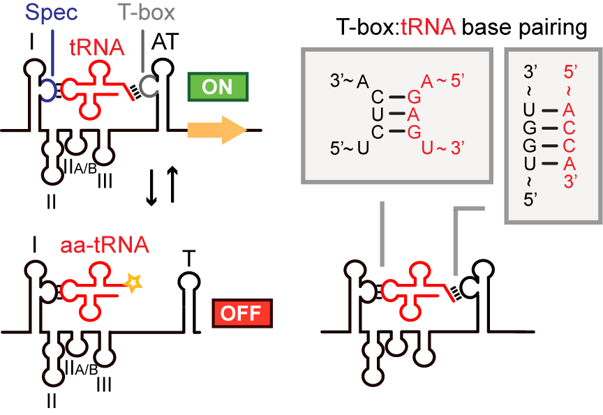

What is the T-box leader sequence?
The T-box leader is a bacterial RNA regulatory element found upstream of many gene clusters associated with amino acid biosynthesis and tRNA-aminoacylation. T-boxes are capable of sensing tRNA aminoacylation state. When an uncharged tRNA is bound, an antiterminator hairpin is formed; otherwise, a terminator hairpin is formed. Downstream genes are therefore transcribed only in the presence of uncharged tRNA. For more information, see the Rfam entry on T-boxes.

T-box features
T-boxes have the following structural features. The image below shows the consensus structures of T-boxes within the TBDB. Note that structures can vary from the conserved set.
- Stem I: One of the first stems in a T-box. Has several loops, and contacts the tRNA anticodon at the specifier. In certain T-boxes, Stem I also makes contact with the tRNA D-loop.
- Specifier loop: Within Stem I, the specifier loop pairs with the anticodon of the cognate tRNA. This helps determine the T-box specificity. May contain multiple reading frames capable of binding more than 1 tRNA species.
- Stem II: T-boxes often have additional Stem II structures following the stem I, and in rare cases preceding stem I.
- Stem IIA/B: This pseudoknot structure is present on T-boxes directly after the Stem II (if present), though exceptions exist.
- Stem III: Structural loop that precedes the antiterminator/antisequestrator in T-boxes.
- Anti-terminator/antisequestrator: The antiterminator (transcriptiona T-boxes) or antisequestrator (translational T-boxes) is a hairpin near the 3’ end of the T-box, containing a bulge with a 5'-UGGN-3' sequence that pairs with the 5'-NCCA-3' of an uncharged tRNA.
T-boxes in synthetic biology
T-boxes can be useful tools in synthetic biology. In accordance with their natural function, they can be used to direct transcription of downstream genes based on tRNA aminoacylation state. More broadly, they can also be used as tRNA-binding elements. For example, Ishida et al. showed that a T-box can be fused to an aminoacylating ribozyme to confer specificity to tRNAs recognized by the T-box.
Predicting downstream gene function based on T-box specificity
Knowing the specificity of a T-box regulating a downstream gene may be helpful in predicting that gene's function. For example, amino acid transporters are often difficult to classify, but transporters regulated by T-boxes can be predicted to transport the same amino acid that the T-box senses.
T-boxes as antibiotic targets
Since T-boxes are found only in bacteria, they may be attractive antibiotic targets. For example, Frolich et al. demonstrated that small-molecule inhibitors of T-box/tRNA binding can inhibit the growth of Gram-positive bacteria in vitro.
Key references
- Initial T-box annotation (n=698), and transporter specificity prediction: Vitreschak et al., 2008
- Using covariance models with INFERNAL to detect RNA motifs and predict secondary structure: Nawrocki and Eddy, 2013
- The Rfam database: Kalvari et al., 2018
- T-box Stem I crystal structure and interactions with tRNA: Grigg et al., 2013, and Zhang and D'Amare, 2013
- T-box cryo-EM structure, and mechanism of aminoacylation sensing: Li et al., 2019
- T-box crystal structure, and mechanism of aminoacylation sensing: Battaglia et al., 2019
- ileS translational T-box crystal structure: Suddala and Zhang, 2019